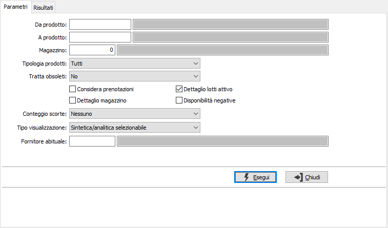
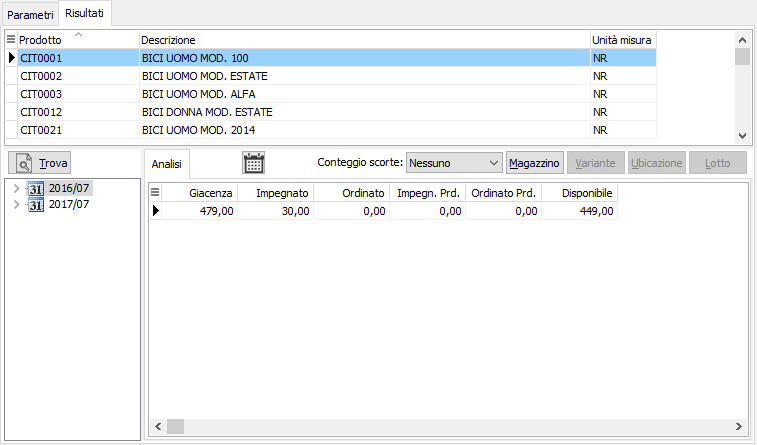

Analisi disponibilità
Il programma permette di ottenere per ciascun prodotto la disponibilità di magazzino (giacenza + ordinato – impegnato).

Nei parametri di selezione è possibile impostare i prodotti, il magazzino, la tipologia dei prodotti (tutti, esclusi articoli fuori inventario, solo articoli fuori inventario, se trattare gli articoli obsoleti (no, sì, solo obsoleti) e se considerare le prenotazioni; se attiva la gestione dei lotti sarà possibile attivare la visualizzazione per lotto spuntando la casella "Dettaglio lotti attivo"; è inoltre possibile preimpostare la visualizzazione e la stampa del conteggio scorte e del dettaglio dei magazzini agendo sui relativi campi; se non impostati sarà comunque possibile, nell'analisi a video, impostarli per singolo prodotto, ma tali modifiche non si rifletteranno sulla stampa. è inoltre possibile analizzare le sole disponibilità negative spuntando la relativa casella. Il parametro relativo al Tipo visualizzazione prevede tre casi: sintetica/analitica, solo sintetica, solo analitica; è inoltre possibile impostare un fornitore abituale in modo da visualizzare solo i prodotti forniti.

Una volta impostati i criteri di selezione viene presentato l’elenco degli articoli: per ognuno viene visualizzata la giacenza alla data corrente e le disponibilità nel tempo; è possibile ottenere facilmente il dettaglio per magazzino e se l’articolo gestisce varianti, lotti e ubicazioni anche il dettaglio in base agli elementi selezionati e il conteggio o meno delle scorte, se previsto sul prodotto.
Tramite il bottone è possibile ottenere la visualizzazione della disponibilità in forma grafica (vista ad albero) oppure in forma di elenco (vista in griglia).
Sulla visualizzazione in forma grafica, sulla vista ad albero, tramite il tasto destro del mouse viene aperto il menù contestuale dal quale è possibile espandere o comprimere tutti i dettagli delle settimane e dei giorni.
Tramite il doppio click sulle colonne di impegnato e di ordinato, anche in produzione, viene visualizzato il dettaglio degli elementi che compongono il valore di sintesi.